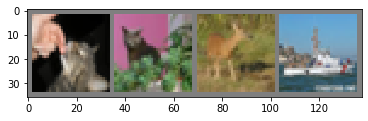
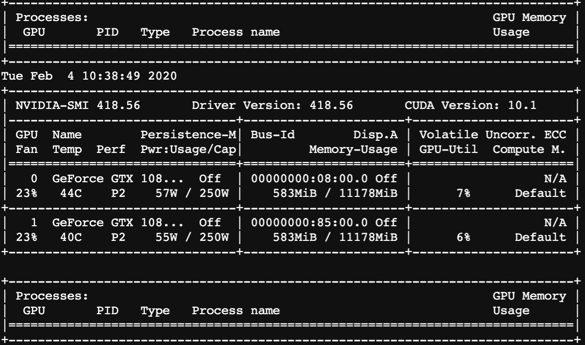

Copyright © 2015 Powered by MWeb, Theme used GitHub CSS.
基础的cuda 啥的就不详细描述了，建议用docker、建议用docker、建议用docker，把搞环境的时间花在跑代码上不香吗？ 本文主要是来自于pytorch 官网，会稍微改下部分内容来作为学习笔记；
# install pytorch 1.4
!pip install -U torch torchvision -i https://mirrors.aliyun.com/pypi/simple
Looking in indexes: https://mirrors.aliyun.com/pypi/simple
Collecting torch
Using cached https://mirrors.aliyun.com/pypi/packages/1a/3b/fa92ece1e58a6a48ec598bab327f39d69808133e5b2fb33002ca754e381e/torch-1.4.0-cp37-cp37m-manylinux1_x86_64.whl (753.4 MB)
Collecting torchvision
Using cached https://mirrors.aliyun.com/pypi/packages/1c/32/cb0e4c43cd717da50258887b088471568990b5a749784c465a8a1962e021/torchvision-0.5.0-cp37-cp37m-manylinux1_x86_64.whl (4.0 MB)
Requirement already satisfied, skipping upgrade: six in /app/anaconda3/lib/python3.7/site-packages (from torchvision) (1.12.0)
Requirement already satisfied, skipping upgrade: pillow>=4.1.1 in /app/anaconda3/lib/python3.7/site-packages (from torchvision) (6.2.0)
Requirement already satisfied, skipping upgrade: numpy in /app/anaconda3/lib/python3.7/site-packages (from torchvision) (1.17.2)
Installing collected packages: torch, torchvision
Successfully installed torch-1.4.0 torchvision-0.5.0
# verification
from __future__ import print_function
import torch
x = torch.rand(5, 3)
print(x)
tensor([[0.3890, 0.3672, 0.2697],
[0.1633, 0.1091, 0.9061],
[0.0438, 0.5167, 0.5995],
[0.0546, 0.0019, 0.8384],
[0.5708, 0.0217, 0.3954]])
# check gpu device
import torch
torch.cuda.is_available()
True
from __future__ import print_function
import torch
x = torch.empty(5, 3)
print(x)
x = torch.rand(5, 3)
print(x)
x = torch.zeros(5, 3, dtype=torch.long)
print(x)
x = torch.tensor([5.5, 3])
print(x)
x = x.new_ones(5, 3, dtype=torch.double) # new_* methods take in sizes
print(x)
x = torch.randn_like(x, dtype=torch.float) # override dtype!
print(x)
print(x.size())
tensor([[0., 0., 0.],
[0., 0., 0.],
[0., 0., 0.],
[0., 0., 0.],
[0., 0., 0.]])
tensor([[0.5029, 0.7441, 0.5813],
[0.1014, 0.4897, 0.2367],
[0.2384, 0.6276, 0.0321],
[0.9223, 0.4334, 0.9809],
[0.1237, 0.3212, 0.0656]])
tensor([[0, 0, 0],
[0, 0, 0],
[0, 0, 0],
[0, 0, 0],
[0, 0, 0]])
tensor([5.5000, 3.0000])
tensor([[1., 1., 1.],
[1., 1., 1.],
[1., 1., 1.],
[1., 1., 1.],
[1., 1., 1.]], dtype=torch.float64)
tensor([[ 0.5468, -0.4615, -0.0450],
[ 0.5001, -0.9717, -0.6103],
[-0.5345, 0.1126, -0.0836],
[-0.5534, 0.5423, -1.1128],
[-1.3799, 1.3353, -1.6969]])
torch.Size([5, 3])
y = torch.rand(5, 3)
print(x+y)
tensor([[ 1.0743, -0.4365, 0.7751],
[ 1.4214, -0.7803, -0.2535],
[ 0.3591, 0.7957, 0.0637],
[-0.3185, 0.5621, -0.9368],
[-0.7098, 1.5445, -1.5394]])
print(torch.add(x, y))
tensor([[ 1.0743, -0.4365, 0.7751],
[ 1.4214, -0.7803, -0.2535],
[ 0.3591, 0.7957, 0.0637],
[-0.3185, 0.5621, -0.9368],
[-0.7098, 1.5445, -1.5394]])
result = torch.empty(5, 3)
torch.add(x, y, out=result)
print(result)
tensor([[ 1.0743, -0.4365, 0.7751],
[ 1.4214, -0.7803, -0.2535],
[ 0.3591, 0.7957, 0.0637],
[-0.3185, 0.5621, -0.9368],
[-0.7098, 1.5445, -1.5394]])
# Any operation that mutates a tensor in-place is post-fixed with an _. For example: x.copy_(y), x.t_(), will change x.
y.add_(x)
print(y)
print(x[:, 1])
tensor([[ 1.0743, -0.4365, 0.7751],
[ 1.4214, -0.7803, -0.2535],
[ 0.3591, 0.7957, 0.0637],
[-0.3185, 0.5621, -0.9368],
[-0.7098, 1.5445, -1.5394]])
tensor([-0.4615, -0.9717, 0.1126, 0.5423, 1.3353])
# Resizing: If you want to resize/reshape tensor, you can use torch.view:
x = torch.randn(4, 4)
y = x.view(16)
z = x.view(-1, 8) # the size -1 is inferred from other dimensions
print(x.size(), y.size(), z.size())
torch.Size([4, 4]) torch.Size([16]) torch.Size([2, 8])
# If you have a one element tensor, use .item() to get the value as a Python number
x = torch.randn(1)
print(x)
print(x.item())
tensor([0.9993])
0.999320387840271
# Converting a Torch Tensor to a NumPy Array
a = torch.ones(5)
print(a)
b = a.numpy()
print(b)
a.add_(1)
print(a)
print(b)
tensor([1., 1., 1., 1., 1.])
[1. 1. 1. 1. 1.]
tensor([2., 2., 2., 2., 2.])
[2. 2. 2. 2. 2.]
# Converting NumPy Array to Torch Tensor
import numpy as np
a = np.ones(5)
b = torch.from_numpy(a)
np.add(a, 1, out=a)
print(a)
print(b)
[2. 2. 2. 2. 2.]
tensor([2., 2., 2., 2., 2.], dtype=torch.float64)
## CUDA Tensors
if torch.cuda.is_available():
device = torch.device("cuda") # a CUDA device object
y = torch.ones_like(x, device=device) # directly create a tensor on GPU
x = x.to(device) # or just use strings ``.to("cuda")``
z = x + y
print(z)
print(z.to("cpu", torch.double)) # ``.to`` can also change dtype together!
tensor([1.9993], device='cuda:0')
tensor([1.9993], dtype=torch.float64)
Central to all neural networks in PyTorch is the autograd package. Let’s first briefly visit this, and we will then go to training our first neural network.
The autograd package provides automatic differentiation for all operations on Tensors. It is a define-by-run framework, which means that your backprop is defined by how your code is run, and that every single iteration can be different.
torch.Tensor is the central class of the package. If you set its attribute .requires_grad as True, it starts to track all operations on it. When you finish your computation you can call .backward() and have all the gradients computed automatically. The gradient for this tensor will be accumulated into .grad attribute.
x = torch.ones(2, 2, requires_grad=True)
print(x)
y = x + 2
print(y)
print(y.grad_fn)
z = y * y * 3
out = z.mean()
print(z, out)
tensor([[1., 1.],
[1., 1.]], requires_grad=True)
tensor([[3., 3.],
[3., 3.]], grad_fn=<AddBackward0>)
<AddBackward0 object at 0x7feca614d6d0>
tensor([[27., 27.],
[27., 27.]], grad_fn=<MulBackward0>) tensor(27., grad_fn=<MeanBackward0>)
a = torch.randn(2, 2)
a = ((a * 3) / (a - 1))
print(a.requires_grad)
a.requires_grad_(True)
print(a.requires_grad)
b = (a * a).sum()
print(b.grad_fn)
False
True
<SumBackward0 object at 0x7feca617ddd0>
out.backward()
print(x.grad)
tensor([[4.5000, 4.5000],
[4.5000, 4.5000]])
x = torch.randn(3, requires_grad=True)
y = x * 2
while y.data.norm() < 1000:
y = y * 2
print(y)
tensor([-1138.8549, 484.4676, 417.7082], grad_fn=<MulBackward0>)
v = torch.tensor([0.1, 1.0, 0.0001], dtype=torch.float)
y.backward(v)
print(x.grad)
tensor([1.0240e+02, 1.0240e+03, 1.0240e-01])
# stop autograd from tracking history on Tensors with .requires_grad=True either by wrapping the code block in with torch.no_grad():
print(x.requires_grad)
print((x ** 2).requires_grad)
with torch.no_grad():
print((x ** 2).requires_grad)
# Or by using .detach() to get a new Tensor with the same content but that does not require gradients:
print(x.requires_grad)
y = x.detach()
print(y.requires_grad)
print(x.eq(y).all())
True
True
False
True
False
tensor(True)
A typical training procedure for a neural network is as follows:
import torch
import torch.nn as nn
import torch.nn.functional as F
class Net(nn.Module):
def __init__(self):
super(Net, self).__init__()
# 1 input image channel, 6 output channels, 3x3 square convolution
# kernel
self.conv1 = nn.Conv2d(1, 6, 3)
self.conv2 = nn.Conv2d(6, 16, 3)
# an affine operation: y = Wx + b
self.fc1 = nn.Linear(16 * 6 * 6, 120) # 6*6 from image dimension
self.fc2 = nn.Linear(120, 84)
self.fc3 = nn.Linear(84, 10)
def forward(self, x):
# Max pooling over a (2, 2) window
x = F.max_pool2d(F.relu(self.conv1(x)), (2, 2))
# If the size is a square you can only specify a single number
x = F.max_pool2d(F.relu(self.conv2(x)), 2)
x = x.view(-1, self.num_flat_features(x))
x = F.relu(self.fc1(x))
x = F.relu(self.fc2(x))
x = self.fc3(x)
return x
def num_flat_features(self, x):
size = x.size()[1:] # all dimensions except the batch dimension
num_features = 1
for s in size:
num_features *= s
return num_features
net = Net()
print(net)
Net(
(conv1): Conv2d(1, 6, kernel_size=(3, 3), stride=(1, 1))
(conv2): Conv2d(6, 16, kernel_size=(3, 3), stride=(1, 1))
(fc1): Linear(in_features=576, out_features=120, bias=True)
(fc2): Linear(in_features=120, out_features=84, bias=True)
(fc3): Linear(in_features=84, out_features=10, bias=True)
)
params = list(net.parameters())
print(len(params))
print(params[0].size()) # conv1's .weight
10
torch.Size([6, 1, 3, 3])
# feed a random input
input = torch.randn(1, 1, 32, 32)
out = net(input)
print(out)
tensor([[-0.0082, -0.0266, 0.0843, 0.0188, 0.1456, -0.1081, -0.0937, 0.0086,
-0.0356, 0.0723]], grad_fn=<AddmmBackward>)
# Zero the gradient buffers of all parameters and backprops with random gradients:
net.zero_grad()
out.backward(torch.randn(1, 10))
output = net(input)
target = torch.randn(10) # a dummy target, for example
target = target.view(1, -1) # make it the same shape as output
criterion = nn.MSELoss()
loss = criterion(output, target)
print(loss)
tensor(1.0206, grad_fn=<MseLossBackward>)
print(loss.grad_fn) # MSELoss
print(loss.grad_fn.next_functions[0][0]) # Linear
print(loss.grad_fn.next_functions[0][0].next_functions[0][0]) # ReLU
<MseLossBackward object at 0x7fec9c351350>
<AddmmBackward object at 0x7feca617d490>
<AccumulateGrad object at 0x7fec9c351350>
net.zero_grad() # zeroes the gradient buffers of all parameters
print('conv1.bias.grad before backward')
print(net.conv1.bias.grad)
loss.backward()
print('conv1.bias.grad after backward')
print(net.conv1.bias.grad)
conv1.bias.grad before backward
tensor([0., 0., 0., 0., 0., 0.])
conv1.bias.grad after backward
tensor([-0.0241, -0.0161, -0.0086, -0.0032, 0.0125, 0.0005])
# using sgd
learning_rate = 0.01
for f in net.parameters():
f.data.sub_(f.grad.data * learning_rate)
# using custom optimizer in torch.optim
import torch.optim as optim
# create your optimizer
optimizer = optim.SGD(net.parameters(), lr=0.01)
# in your training loop:
optimizer.zero_grad() # zero the gradient buffers
output = net(input)
loss = criterion(output, target)
loss.backward()
optimizer.step() # Does the update
When you have to deal with image, text, audio or video data, you can use standard python packages that load data into a numpy array. Then you can convert this array into a torch.*Tensor.
import torch
import torchvision
import torchvision.transforms as transforms
transform = transforms.Compose(
[transforms.ToTensor(),
transforms.Normalize((0.5, 0.5, 0.5), (0.5, 0.5, 0.5))])
trainset = torchvision.datasets.CIFAR10(root='./data', train=True,
download=True, transform=transform)
trainloader = torch.utils.data.DataLoader(trainset, batch_size=4,
shuffle=True, num_workers=2)
testset = torchvision.datasets.CIFAR10(root='./data', train=False,
download=True, transform=transform)
testloader = torch.utils.data.DataLoader(testset, batch_size=4,
shuffle=False, num_workers=2)
classes = ('plane', 'car', 'bird', 'cat',
'deer', 'dog', 'frog', 'horse', 'ship', 'truck')
Files already downloaded and verified
Files already downloaded and verified
%matplotlib inline
import matplotlib.pyplot as plt
import numpy as np
# functions to show an image
def imshow(img):
img = img / 2 + 0.5 # unnormalize
npimg = img.numpy()
plt.imshow(np.transpose(npimg, (1, 2, 0)))
plt.show()
# get some random training images
dataiter = iter(trainloader)
images, labels = dataiter.next()
# show images
imshow(torchvision.utils.make_grid(images))
# print labels
print(' '.join('%5s' % classes[labels[j]] for j in range(4)))

cat cat deer ship
import torch.nn.functional as F
import torch.nn as nn
class Net(nn.Module):
def __init__(self):
super(Net, self).__init__()
self.conv1 = nn.Conv2d(3, 6, 5)
self.pool = nn.MaxPool2d(2, 2)
self.conv2 = nn.Conv2d(6, 16, 5)
self.fc1 = nn.Linear(16 * 5 * 5, 120)
self.fc2 = nn.Linear(120, 84)
self.fc3 = nn.Linear(84, 10)
def forward(self, x):
x = self.pool(F.relu(self.conv1(x)))
x = self.pool(F.relu(self.conv2(x)))
x = x.view(-1, 16 * 5 * 5)
x = F.relu(self.fc1(x))
x = F.relu(self.fc2(x))
x = self.fc3(x)
return x
net = Net()
import torch.optim as optim
criterion = nn.CrossEntropyLoss()
optimizer = optim.SGD(net.parameters(), lr=0.001, momentum=0.9)
for epoch in range(2): # loop over the dataset multiple times
running_loss = 0.0
for i, data in enumerate(trainloader):
# print(data)
# get the inputs; data is a list of [inputs, labels]
inputs, labels = data
# print(inputs, labels)
# zero the parameter gradients
optimizer.zero_grad()
# forward + backward + optimize
outputs = net(inputs)
loss = criterion(outputs, labels)
loss.backward()
optimizer.step()
# print statistics
running_loss += loss.item()
if i % 2000 == 1999: # print every 2000 mini-batches
print('[%d, %5d] loss: %.3f' %
(epoch + 1, i + 1, running_loss / 2000))
running_loss = 0.0
print('Finished Training')
[1, 2000] loss: 2.203
[1, 4000] loss: 1.875
[1, 6000] loss: 1.680
[1, 8000] loss: 1.563
[1, 10000] loss: 1.480
[1, 12000] loss: 1.474
[2, 2000] loss: 1.397
[2, 4000] loss: 1.365
[2, 6000] loss: 1.350
[2, 8000] loss: 1.321
[2, 10000] loss: 1.302
[2, 12000] loss: 1.300
Finished Training
PATH = './cifar_net.pth'
torch.save(net.state_dict(), PATH)
dataiter = iter(testloader)
images, labels = dataiter.next()
# print images
imshow(torchvision.utils.make_grid(images))
print(labels)
print('GroundTruth: ', ' '.join('%5s' % classes[labels[j]] for j in range(4)))

tensor([3, 8, 8, 0])
GroundTruth: cat ship ship plane
net = Net()
net.load_state_dict(torch.load(PATH))
<All keys matched successfully>
outputs = net(images)
print(outputs)
_, predicted = torch.max(outputs, 1)
print(predicted)
print('Predicted: ', ' '.join('%5s' % classes[predicted[j]]
for j in range(4)))
tensor([[-8.1609e-01, -7.3227e-01, 1.9178e-01, 1.9166e+00, -9.6811e-01,
8.3362e-01, 1.1127e+00, -1.4818e+00, 3.7150e-01, -7.1563e-01],
[ 7.2351e+00, 4.0154e+00, 1.7224e-03, -2.3247e+00, -2.0117e+00,
-4.3768e+00, -4.1172e+00, -4.6825e+00, 8.7625e+00, 2.0940e+00],
[ 3.9245e+00, 1.3894e+00, 6.4428e-01, -1.0531e+00, -8.4998e-01,
-2.2757e+00, -2.7469e+00, -2.2073e+00, 4.4428e+00, 6.6101e-01],
[ 4.5622e+00, -6.9576e-02, 1.1598e+00, -8.8092e-01, 9.0635e-01,
-2.1905e+00, -1.8022e+00, -2.2323e+00, 4.0340e+00, -7.8086e-01]],
grad_fn=<AddmmBackward>)
tensor([3, 8, 8, 0])
Predicted: cat ship ship plane
correct = 0
total = 0
with torch.no_grad():
for data in testloader:
images, labels = data
outputs = net(images)
_, predicted = torch.max(outputs.data, 1)
total += labels.size(0)
correct += (predicted == labels).sum().item()
print('Accuracy of the network on the 10000 test images: %d %%' % (
100 * correct / total))
Accuracy of the network on the 10000 test images: 55 %
class_correct = list(0. for i in range(10))
class_total = list(0. for i in range(10))
with torch.no_grad():
for data in testloader:
images, labels = data
outputs = net(images)
_, predicted = torch.max(outputs, 1)
c = (predicted == labels).squeeze()
for i in range(4):
label = labels[i]
class_correct[label] += c[i].item()
class_total[label] += 1
for i in range(10):
print('Accuracy of %5s : %2d %%' % (
classes[i], 100 * class_correct[i] / class_total[i]))
Accuracy of plane : 66 %
Accuracy of car : 59 %
Accuracy of bird : 36 %
Accuracy of cat : 38 %
Accuracy of deer : 56 %
Accuracy of dog : 27 %
Accuracy of frog : 73 %
Accuracy of horse : 59 %
Accuracy of ship : 72 %
Accuracy of truck : 63 %
device = torch.device("cuda:0" if torch.cuda.is_available() else "cpu")
# Assuming that we are on a CUDA machine, this should print a CUDA device:
print(device)
net.to(device)
for epoch in range(2): # loop over the dataset multiple times
running_loss = 0.0
for i, data in enumerate(trainloader):
# print(data)
# get the inputs; data is a list of [inputs, labels]
inputs, labels = data[0].to(device), data[1].to(device)
# print(inputs, labels)
# zero the parameter gradients
optimizer.zero_grad()
# forward + backward + optimize
outputs = net(inputs)
loss = criterion(outputs, labels)
loss.backward()
optimizer.step()
# print statistics
running_loss += loss.item()
if i % 2000 == 1999: # print every 2000 mini-batches
print('[%d, %5d] loss: %.3f' %
(epoch + 1, i + 1, running_loss / 2000))
running_loss = 0.0
print('Finished Training')
cuda:0
[1, 2000] loss: 1.195
[1, 4000] loss: 1.204
[1, 6000] loss: 1.204
[1, 8000] loss: 1.188
[1, 10000] loss: 1.207
[1, 12000] loss: 1.228
[2, 2000] loss: 1.191
[2, 4000] loss: 1.209
[2, 6000] loss: 1.202
[2, 8000] loss: 1.209
[2, 10000] loss: 1.214
[2, 12000] loss: 1.203
Finished Training
net = Net()
net.load_state_dict(torch.load(PATH))
correct = 0
total = 0
with torch.no_grad():
for data in testloader:
images, labels = data
outputs = net(images)
_, predicted = torch.max(outputs.data, 1)
total += labels.size(0)
correct += (predicted == labels).sum().item()
print('Accuracy of the network on the 10000 test images: %d %%' % (
100 * correct / total))
Accuracy of the network on the 10000 test images: 55 %
if torch.cuda.device_count() > 1:
print("Let's use", torch.cuda.device_count(), "GPUs!")
net = nn.DataParallel(net)
net.to(device)
for epoch in range(4): # loop over the dataset multiple times
running_loss = 0.0
for i, data in enumerate(trainloader):
# print(data)
# get the inputs; data is a list of [inputs, labels]
inputs, labels = data[0].to(device), data[1].to(device)
# print(inputs, labels)
# zero the parameter gradients
optimizer.zero_grad()
# forward + backward + optimize
outputs = net(inputs)
loss = criterion(outputs, labels)
loss.backward()
optimizer.step()
# print statistics
running_loss += loss.item()
if i % 2000 == 1999: # print every 2000 mini-batches
print('[%d, %5d] loss: %.3f' %
(epoch + 1, i + 1, running_loss / 2000))
running_loss = 0.0
print('Finished Training')
Let's use 2 GPUs!
[1, 2000] loss: 1.202
[1, 4000] loss: 1.197
[1, 6000] loss: 1.202
[1, 8000] loss: 1.194
[1, 10000] loss: 1.211
[1, 12000] loss: 1.210
[2, 2000] loss: 1.208
[2, 4000] loss: 1.184
[2, 6000] loss: 1.215
[2, 8000] loss: 1.198
[2, 10000] loss: 1.201
[2, 12000] loss: 1.208
[3, 2000] loss: 1.206
[3, 4000] loss: 1.209
[3, 6000] loss: 1.198
[3, 8000] loss: 1.206
[3, 10000] loss: 1.209
[3, 12000] loss: 1.208
[4, 2000] loss: 1.203
[4, 4000] loss: 1.206
[4, 6000] loss: 1.203
[4, 8000] loss: 1.187
[4, 10000] loss: 1.220
[4, 12000] loss: 1.207
Finished Training

Copyright © 2015 Powered by MWeb, Theme used GitHub CSS.